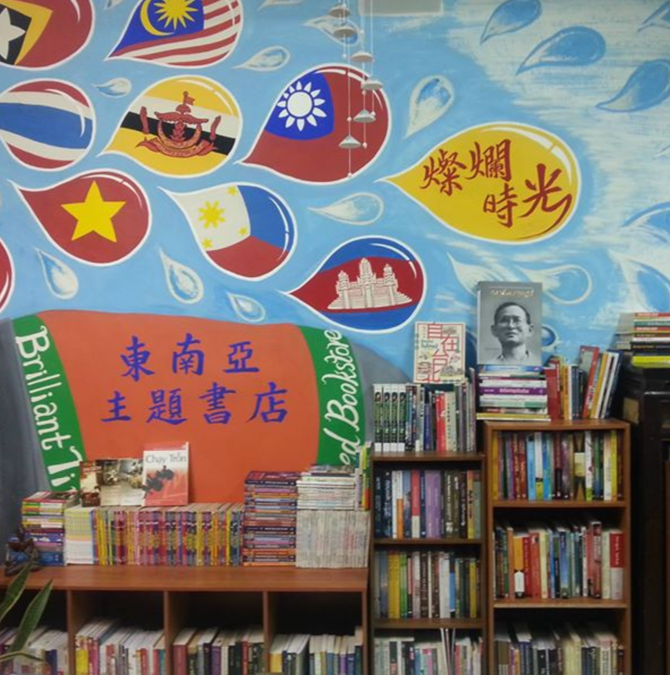

燦爛時光東南亞書店
地址：新北市中和區興南路一段135巷1號
電話：N/A
據點簡介：
第一屆移民工文學獎得獎者Erin，來自印尼，在台灣擔任家庭幫傭。兩年沒放過一天假的她說＂Reading makes me free.＂這句話開啟了「燦爛時光」。
為了完成這個夢想，創辦人發起「帶一本自己看不懂的書回台灣」募書活動，鼓勵前往東南亞的台灣人，從東南亞帶回一本用陌生文字所寫的書，豐富異鄉人的心靈。同時，他們努力營造一個舒適、友善的閱讀空間，希望異鄉人能在此到自己的燦爛時光，也希望本地人能從這裡發現世界的多元與美妙。
「燦爛時光」這個名字，來自天下雜誌替已故學者成露茜所出版的傳記《燦爛時光：Lucie的人生探索》。Lucie一生大開大闔、勇於探索，在美國替早期移民留下珍貴紀錄，在台灣開辦移民工母語媒體《四方報》。若能保有善良又好奇的靈魂，無論身在何處，都能找到燦爛時光。